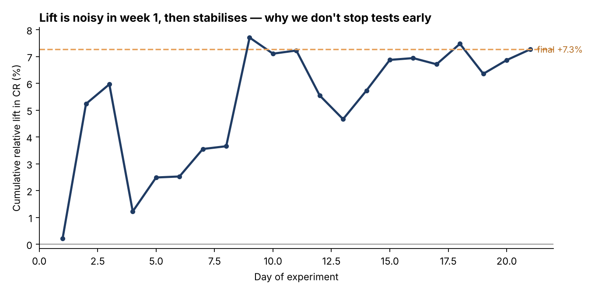
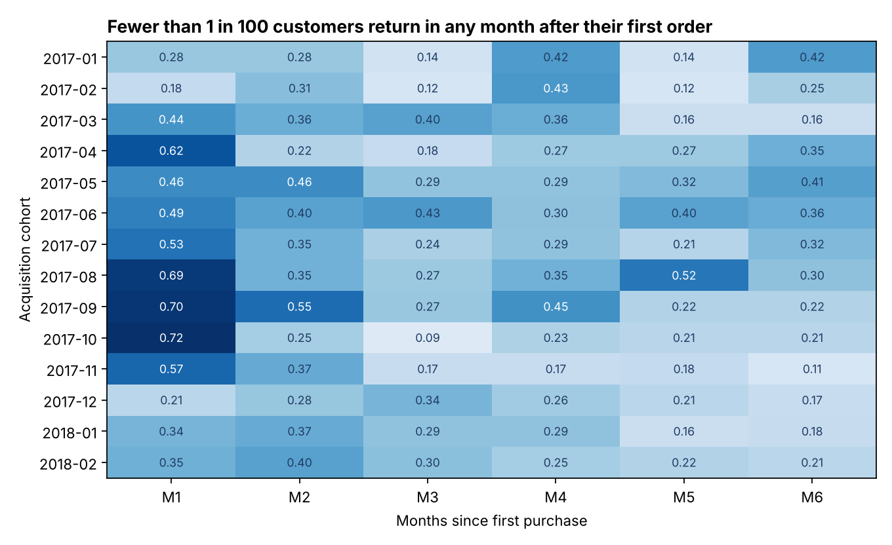

YashikaBhatia
I find where a product is leaking revenue, work out why, and turn it into a change the team can test. Currently a Product / Data Analyst at Times Internet (The Economic Times).
About
I'm a product analyst who works close to revenue. My job is to spot the business problem, find the friction in the funnel, and suggest what to change, then prove it with an A/B test.
At Times Internet I own analytics for a health & wellness platform: city running events, online yoga subscriptions and dietitian-led diet plans. That covers website and funnel improvements, product and pricing strategy, marketing-funnel efficiency on Meta and Google, payment-gateway issues and daily business dashboards.
Before that, at Convertcart, I ran conversion-optimisation programmes for 60+ global e-commerce brands.
- Role
- Product / Data Analyst
- Currently
- Times Internet (The Economic Times)
- Focus
- Funnels, growth, experimentation, pricing
- Core stack
- SQL · BigQuery · GA4 · Power BI / Looker
- Experience
- 2.5+ years
- Education
- BSc Physical Science, Gargi College (DU) · 9.13/10
- Based in
- Delhi NCR, India
Selected projects
Self-initiated analyses on public or clearly labelled simulated data. Open any project for the problem, data, approach, findings, impact and charts. All queries and outputs are on GitHub.
P/01Real data · SQLWhat wins on Indian business-news YouTube? ET vs 5 peers
+1.1Mviews / month opportunity+
What wins on Indian business-news YouTube? ET vs 5 peers
Problem
ET's YouTube team has limited editing capacity. Which formats, topics, video lengths and title styles actually win reach, and where is ET behind its competitors?
Data
1,860 recent uploads (long-form and Shorts) I collected from the public YouTube pages of The Economic Times, Moneycontrol, CNBC-TV18, Business Today, Mint and NDTV Profit on 18 Nov 2026: views, likes, comments, duration and publish time. Videos under 24 hours old were excluded.
Approach
- Converted publish times to IST and tagged every video by topic and title features with SQL CASE logic.
- Built a performance index (views ÷ the same channel's median for that format) so channels of different sizes compare fairly.
- Used breakout rate (share of videos at 2×+ the channel median) instead of averages, because a few viral videos (one at 1,000× median) distort any mean.
- Cut results by format, length, topic, title features and hour, then benchmarked ET against the peer average.
Key findings
- ET posts ~1 Short a week vs 41–300 a week at peers, yet its Shorts get a median 7.3K views, 1.7× its own long-form.
- Shorts bring 38–61% of views for NDTV Profit and CNBC-TV18, but only 18% for ET.
- ET has the highest engagement of the six channels: 1.6% on long-form vs 0.4–0.6% for peers.
- Geopolitics is 35% of all uploads but under-performs markets, personal finance and Indian politics.
- 10–30 minute videos break out 39% of the time vs 24% for clips under 3 minutes; 80+ character titles break out 14pp more often.
Impact
Restarting Shorts at 5 a day, at today's median performance, is worth ~1.1M extra views a month (about +54%) on ET's current long-form base.
Recommendations
- Cut 3–5 vertical clips a day from existing interviews.
- Shift some geopolitics output to markets and personal finance, where ET already beats peers ~1.9×.
- Default to 10–30 minute explainers with descriptive, quote-led titles.


Note: One snapshot of about two weeks of uploads; topics are tagged by title keywords.
P/02Experimentation · ExcelA/B test design & readout, with a ship / no-ship call
+7.3%conversion lift+
A/B test design & readout, with a ship / no-ship call
Problem
Does showing a delivery date and a "free returns" badge at checkout raise conversion without hurting refunds or basket size, and should we ship it?
Data
A simulated 21-day checkout experiment with 231K sessions, clearly labelled as simulated, aggregated to 168 daily rows (day × arm × device × user type).
Approach
- Sized the test: 77,062 sessions per arm to detect an 8% relative lift on a 3.2% baseline, run for 3 full weeks.
- Checked the traffic split with a chi-square sample-ratio-mismatch test.
- Tested conversion and revenue per session with z-tests and 95% confidence intervals; tested refund rate and AOV as guardrails.
- Cut by device and new vs returning users with Bonferroni-corrected significance, and checked for a novelty effect.
- Everything is 289 live Excel formulas, so changing an input recalculates the whole readout, including the written memo.
Key findings
- Conversion rose from 3.22% to 3.45%: +7.3% (95% CI +2.7% to +11.8%, p = 0.002).
- Revenue per session +5.5%; the traffic split was healthy (SRM p = 0.28).
- Refund rate rose from 4.26% to 6.15%: a guardrail breach (p = 0.0002).
- The win is almost all mobile (+12.0%, significant); desktop +1.6% is not significant.
- No novelty effect: lift held or grew after day 3.
Impact
About ₹7.2M net a year after reversed orders and refund handling, vs ₹12.0M gross. Decision: ship to mobile only, behind a flag, after re-testing without the free-returns badge.
Recommendations
- Pull refund reasons for treatment orders.
- Re-test with the delivery date only.
- Monitor refund rate weekly after the mobile rollout.


Note: Simulated data, used to show the design and decision method.
P/03Root cause · SQLLate deliveries & bad reviews: an e-commerce RCA
−20%late orders+
Late deliveries & bad reviews: an e-commerce RCA
Problem
Review scores fell sharply in some months. What drives 1–2★ reviews, where in the order lifecycle does it start, who owns the fix, and what is it worth?
Data
Public Olist Brazilian marketplace data: 96K delivered orders (2016–2018) across orders, customers, items, sellers and reviews.
Approach
- Built one clean delivered-orders view with de-duplicated reviews and delivery vs promised date.
- Split each order into approval → seller preparation → carrier transit.
- Cut by state, seller decile, category and month; built a seller SLA scorecard.
- Sized the fix in orders, reviews and GMV. 12 SQL queries.
Key findings
- Late orders get 54% bad reviews vs 9% on time.
- There is a cliff at 4 days late: 61–78% of reviews turn bad.
- A late seller hand-over makes late delivery 3.8× likelier (24.4% vs 6.5%).
- The worst 30% of sellers cause 54% of late orders.
- CE, BA and RJ run 13–15% late vs 6% in SP; Black Friday and Feb–Mar 2018 were the worst months.
Impact
Fixing late seller hand-overs removes ~1,560 late orders (20%) and ~700 bad reviews, protecting part of R$1.35M of late-order GMV.
Recommendations
- Seller SLA alerts and a weekly scorecard; coach, then penalise the bottom decile.
- Regional ETA buffers for peak months.
- Proactive delay messages before an order crosses 4 days late.


P/04Retention · SQLCohorts, RFM segments & a sized win-back plan
R$309Kwin-back value+
Cohorts, RFM segments & a sized win-back plan
Problem
Do acquired customers come back? Whom should CRM target first, and what is a win-back campaign worth?
Data
Public Olist data: 93K unique customers and R$15.4M revenue.
Approach
- Built a customer-orders view with each customer's order sequence and cohort month.
- Measured repeat rate and time to second order; built a monthly cohort retention matrix.
- Scored every customer on Recency and Monetary quintiles (NTILE) plus a repeat flag, mapped to 6 named segments.
- Ranked first-purchase categories by repeat rate and sized a win-back campaign at 3%, 5% and 10%.
Key findings
- Only 3.0% of customers buy again; repeat buyers bring 5.6% of revenue.
- 54% of second orders happen within 90 days.
- At-risk high-value customers: 22% of the base, 40% of revenue, averaging R$298.
- Home, decor and bed/bath first purchases repeat 3× more than electronics.
Impact
Reactivating 5% of at-risk high-value customers once ≈ R$309K (+2.0% revenue); 10% ≈ R$618K.
Recommendations
- Day 60–90 win-back flow with a hold-out group.
- A second-order nudge inside 30 days for new high-value buyers.
- Use home and decor as acquisition categories.


P/05Revenue · SQLRevenue, category & payment deep-dive
3.3×AOV on 7+ instalments+
Revenue, category & payment deep-dive
Problem
Is revenue growth coming from more buyers or bigger baskets? Which categories and payment options matter, and does freight cost hurt reviews?
Data
Public Olist data: 96K delivered orders, Jan 2017 to Aug 2018.
Approach
- Monthly GMV, orders and AOV with MoM % and a 3-month rolling average.
- Jan–Aug year-over-year comparison.
- Category Pareto and H1 growth by category.
- Payment mix and instalment bands vs basket size; freight share vs review score. 8 SQL queries.
Key findings
- GMV grew 2.4× YoY (R$3.47M → R$8.45M), almost entirely from more buyers; AOV stayed flat at ~R$160.
- GMV plateaued at R$1.0–1.1M a month from Jan 2018.
- Top 7 categories make ~50% of revenue.
- Orders on 7+ instalments are 16% of card orders but 32% of card GMV, with AOV R$334 vs R$101.
- Hypothesis rejected: freight share barely moves reviews.
Impact
Identified instalments as the strongest untapped AOV lever and showed delivery speed matters more than freight discounts.
Recommendations
- Promote no-interest 6x/10x instalments on items above R$150, and A/B test it.
- Shift acquisition budget to the fastest-growing categories.
- Track a weekly GMV bridge: buyers × orders per buyer × AOV.


Work case studies
Real problems from my current role. The product is anonymised and internal numbers are rounded; the approach and outcomes are mine.
C/01Selling more tickets for city running events
+10%landing → registration+
Selling more tickets for city running events
Problem
- Ticket sales for running events in 4 metro cities needed to grow, and conversion from landing to registration was low.
- Paid ads were spending heavily without a clear view of which were working.
What I did
- Mapped the full funnel and found the friction: a long registration form, extra details asked too early and a clunky UI flow.
- Proposed a shorter, simpler flow and ran it as an A/B test.
- Noticed most runners sign up in groups, so I designed a referral plan with a ticket-upgrade reward.
- Analysed Meta and Google ads: paused high-spend, low-return ads and turned patterns from the winners into creative changes.
- Investigated payment-gateway failures in the checkout funnel.
- Built a business dashboard with daily updates and city-specific strategies and tests.
Impact
- +10% landing-to-registration conversion from the simplified flow, lifting total revenue.
- The referral plan drove more group registrations and revenue.
- Opened new revenue streams beyond tickets: stalls, corporate tickets and sponsorships.
- Less ad spend wasted on poor performers.
C/02Growing online yoga subscriptions
+5%funnel conversion+
Growing online yoga subscriptions
Problem
- Online yoga classes sold as 1-month, 3-month and 1-year plans. The goal was more subscriptions and more revenue.
- Users only saw plans and prices after submitting a lead form, so many dropped off before seeing the value.
What I did
- Analysed the funnel step by step and proposed showing plans directly on the page, before the lead form.
- Proposed selling yoga plans to an international audience at a higher price point.
Impact
- +5% conversion after moving plans ahead of the lead form.
- International pricing added a higher-AOV revenue stream.
C/03Building trust and new markets for diet plans
50%+net GTV growth+
Building trust and new markets for diet plans
Problem
- Dietitian-led diet plans (consultation call plus 1/3/6/12-month plans). The brand was new and unknown, so trust and leads were the bottleneck.
What I did
- Proposed free webinars to generate leads, build trust and then sell plans.
- Proposed launching online diet plans in international markets such as the UAE and Singapore at higher rates.
Impact
- Webinars generated ₹5 lakh in revenue.
- International plans grew the business by more than 50% in net GTV.
C/04Targeting the right users with a propensity model
₹40L+revenue impact (all RCAs)+
Targeting the right users with a propensity model
Problem
- Marketing and CRM effort was spread evenly across users, and revenue was leaking at payment.
What I did
- Built a propensity model to score users on how likely they were to buy, so campaigns could focus on the highest-intent users.
- Ran root-cause analyses on payment failures and funnel drop-offs across products, channels and segments.
Impact
- Root-cause fixes across the funnel and payments delivered ₹40L+ revenue impact.
Experience
Product / Data Analyst
- Own funnel, growth and product analytics for a health & wellness platform (city running events, online yoga and diet subscriptions), working on website and product improvements, product strategy and growth.
- Built an end-to-end analytics framework linking acquisition, registration, plan selection, payment and purchase funnels to revenue across products, channels and user segments.
- Led hypothesis-driven root-cause analyses on payment failures, funnel drop-offs, campaign performance and tracking discrepancies, supporting ₹40L+ revenue impact.
- Designed and evaluated A/B tests on UX changes, conversion blockers, plan presentation and user nudges, including the registration flow that lifted landing-to-registration conversion +10%.
- Analysed Meta, Google, telecalling and WhatsApp acquisition funnels and ROAS; paused under-performing high-spend ads and fed winning patterns back into creatives.
- Shaped product and pricing strategy: referral plans for group sign-ups, international plans at higher price points (50%+ net GTV growth for diet) and webinar-led lead generation (₹5L revenue).
- Proposed new revenue streams for events (stalls, corporate tickets, sponsorships) and city-specific strategies and tests.
- Built a propensity model to prioritise high-intent users for campaigns and CRM.
- Automated recurring business reporting with SQL, BigQuery, GA4, Apps Script and dashboards; built an LLM-powered workflow for natural-language exploration of daily transaction data.
Associate Team Lead, CRO
- Owned conversion-rate optimisation and product analytics for 60+ global e-commerce accounts (Shopify, Magento, BigCommerce), analysing customer journeys, funnel performance and revenue opportunities.
- Designed and evaluated 4–6 A/B and multivariate tests every month across landing pages, product pages and checkout flows, achieving 10%+ conversion growth.
- Used GA4, SQL, heatmaps and session recordings to diagnose behaviour patterns, conversion barriers and drop-offs.
- Built 20+ Looker Studio and Power BI dashboards to monitor conversion, revenue, customer behaviour and experiment performance.
- Presented data-backed growth priorities to senior client stakeholders; managed enterprise accounts worth $5K–$15K MRR with 96% client retention.
- Led a team of 2 and coordinated Product, Design, Development, QA and Customer Success from hypothesis to launch and final recommendations.
- Won the Best BA Award (Dec 2025) and Star of the Month.
BSc Physical Science
- CGPA 9.13 / 10
Toolkit
Data & querying
SQL · BigQuery · GCP · DBT · Google Sheets · Advanced Excel · Apps Script
Product analytics
GA4 · Mixpanel · Microsoft Clarity · VWO · Heatmaps & session recordings
BI & reporting
Power BI · Looker Studio · automated dashboards & MIS
Methods
Funnel & RCA · A/B testing · cohorts & RFM · propensity scoring · pricing & GTM · Meta / Google Ads analysis
Get in touch
Open to product, data, business and decision analyst roles in Delhi NCR or remote. Email is the fastest way to reach me.